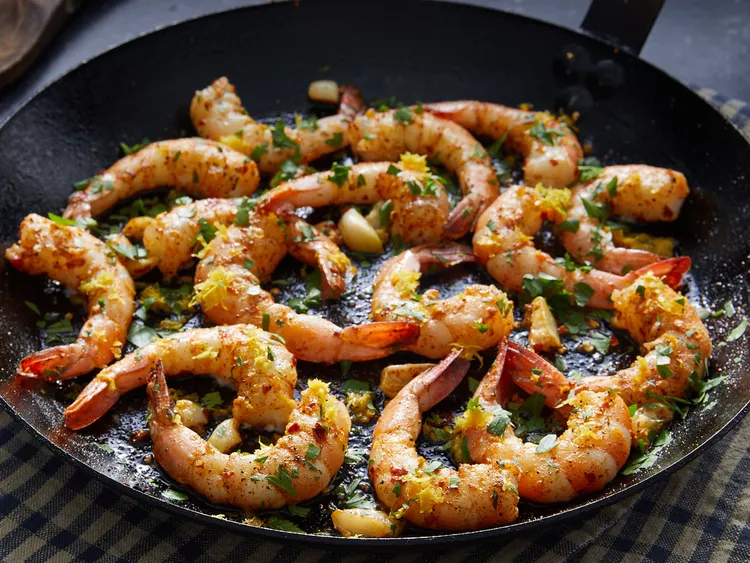

Lemon-Garlic Shrimp

Description
Lemon-garlic shrimp is a delicious appetizer that's perfect to throw together before a last-minute party. Or, serve this fresh, citrusy seafood over rice or pasta and make it a main dish on a busy weeknight when you're short on time.
Ingredients
- 1 tablespoon olive oil, or as needed
- 16 large shrimp - peeled, deveined, and tails on, or more to taste
- 3 large cloves garlic, smashed, or more to taste
- ½ teaspoon crushed red pepper flakes, or to taste
- 2 teaspoons seafood seasoning (such as Old Bay®), or to taste
- salt and ground black pepper to taste
- 3 tablespoons chopped fresh parsley
- 2 tablespoons lemon juice
- 3 teaspoons lemon zest